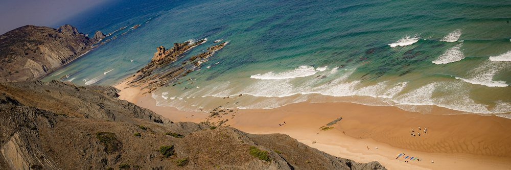

Guide · 2 min read
When to go on a surf trip to Sagres: month by month
The surf house in Sagres is open from March to December. Each part of that season feels different, so the best month depends on your level, how much you mind the cold and whether you prefer quiet beaches or the summer buzz.
By Robert Lawrence, partner at SNAP SURF TRIPS · Updated

Spring (March to May)
The Atlantic is still lively after winter, so you can find good waves. Mornings are fresh and the beaches are quiet. A good choice if you already surf or if you want to avoid the crowds. Pack layers: the weather can change from one day to the next.
Summer (June to August)
Usually the warmest weather and the busiest weeks. Waves are generally smaller, which many beginners find easier. The wind often picks up in the afternoon, so mornings tend to give the cleanest conditions. Group proposals run until July and resume in mid-September.
Autumn (September to November)
Many surfers see autumn as the sweet spot: the sea still holds the warmth of summer, the swell becomes more regular and there are fewer people. It works for first lessons and for surfers who want to progress.
December
The house stays open until December. Expect the biggest swell and the coolest weather of the season: better if you have some experience or if you are happy to let your instructors choose the spot.
Whatever the month, the spot changes every day
The Sagres peninsula has coastline facing west and south, so instructors can usually choose a beach that suits that day's swell and wind. You only need to choose your dates. The Atlantic is cool all year, so a wetsuit is part of every session.
How to choose your dates
Give two or three options if you can, and remember that flights are not part of the packages. Send what you know in one enquiry from the Sagres page: we check availability and reply with a personalised proposal.